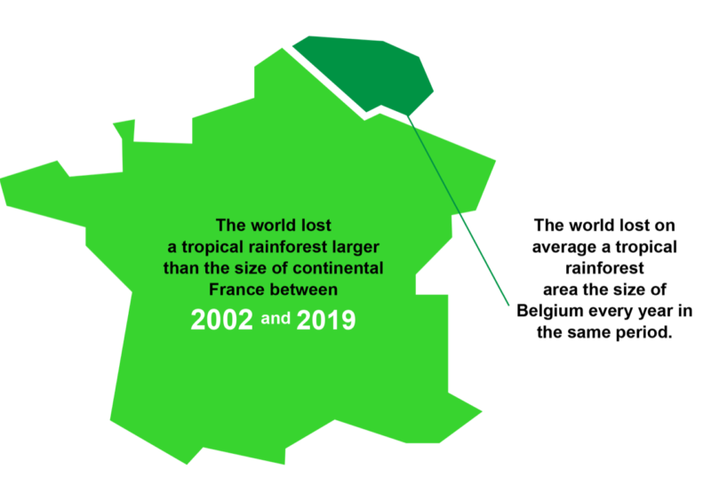
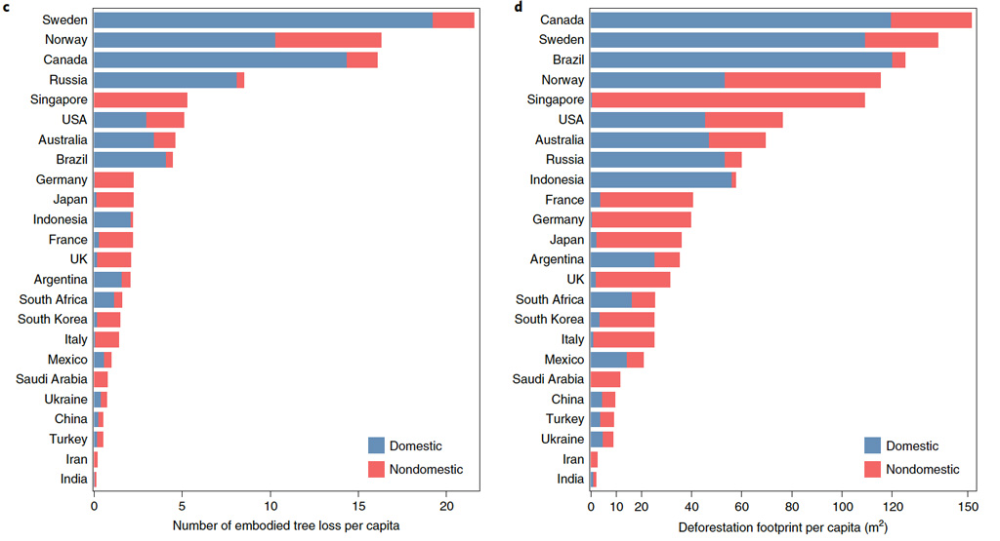
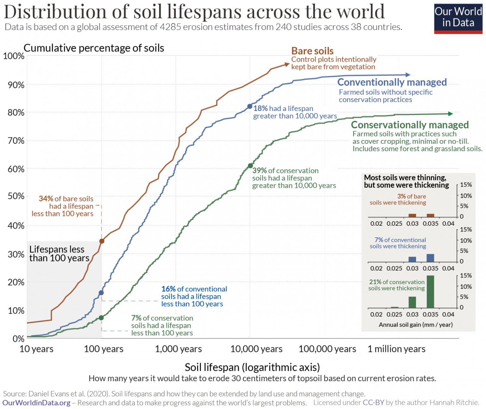

17 Land Use
17.1 Agriculuture
Our industrial food boom spawned similar failures of systemic context. Our inventive, so-called green revolution of food solutions produced a lot of food and made profits for large corporations, but depleted soil nutrients, spread toxins, severed mycelial networks, and disrupted nutrient cycles, creating eutrophic lakes and dead zones in our oceans.
17.2 Forests
17.2.1 Tropical Rainforest
Analysed and compiled Global Forest Watch data from all of the 73 countries that are home to the world’s tropical rainforests, the planet’s oldest and most diverse terrestrial ecosystem.
Of the approximately 14.5 million square kilometres of tropical rainforest that once covered Earth’s surface, only 36 % remains intact. Just over a third, 34 %, is completely gone and the last 30 % is in various forms of degradation.
Of the current rainforest cover, almost half (45 %) is in a degraded state.
An area half the size of Europe is still completely intact.

The remaining tropical rainforests are either severely damaged or increasingly fragmented. Humans are chopping these once vast and impenetrable forests into smaller and smaller pieces, undermining their ability to store carbon, cool the planet, produce rain and provide habitats.
17.3 Deforestation Footprint
Carbonbrief
Agriculture and forestry are responsible for 80% of global deforestation. This is mainly driven by demand for goods – including coffee, chocolate, cattle, soy, palm oil and timber – that are often then traded and consumed in countries around the world.
The UK, Germany, France, Italy and Japan “imported” more than 90% of their national deforestation footprints from abroad between 2001 and 2015, the study finds, of which between 46% and 57% was from tropical forests.
Residents in G7 countries drove an average loss of 3.9 trees or 58m2 of forest per capita through their consumption patterns in 2015, the results show, with the per-capita tree loss of the US in 2015 clocking in at twice that of Japan, Germany, France or the UK.
Tree loss in Singapore was almost entirely imported from south-east Asia, the study notes. Meanwhile, Brazilian deforestation was predominantly categorised as domestic – although much of it was the result of producing goods that would be exported.

Obtaining net forest gains domestically, but expanding non-domestic deforestation footprints – especially in the tropics – might do more harm than good for climate change mitigation.
Deforestation is now one of the largest sources of greenhouse-gas emissions on the planet.
It’s easy to look at the farmers, foresters and countries where deforestation is occurring and wish they would stop. But they are responding to signals from the global market. We are buying their soy as feed for our hamburgers and salmon and their palm oil as input to our lipstick.
Hoang
Deforestation, a significant threat to biodiversity, is accelerated by global demand for commodities. Although prior literature has linked deforestation to global supply chains, here we provide a fine-scale representation of spatial patterns of deforestation associated with international trade. Using remote sensing data and a multi-region input–output model, we quantify and map the spatiotemporal changes in global deforestation footprints over 15 years (2001–2015) at a 30-m resolution. We find that, while many developed countries, China and India have obtained net forest gains domestically, they have also increased the deforestation embodied in their imports, of which tropical forests are the most threatened biome. Consumption patterns of G7 countries drive an average loss of 3.9 trees per person per year. Some of the hotspots of deforestation embodied in international trade are also biodiversity hotspots, such as in Southeast Asia, Madagascar, Liberia, Central America and the Amazonian rainforest. Our results emphasize the need to reform zero-deforestation policies through strong transnational efforts and by improving supply chain transparency, public–private engagement and financial support for the tropics.
Hoang (2021) Mapping Deforestation Footprint(Nature, paywall)
17.4 Wetland
Global Wetland Outlook
Global Wetland Outlook 2021 Update
– Våtmarker lagrer over 30 prosent av alt landbasert karbon og er viktige for helse- mat- og vannsikkerhet.
Den internasjonale avtalen om våtmarker – Ramsarkonvensjonen – har lansert en ny spesialrapport om situasjonen for verdens gjenværende våtmarker, Global Wetland Outlook: Special Edition 2021.
Rapporten viser at vi fortsetter å ødelegge eller forringe våtmarkene i et alarmerende tempo. Globalt har 35 prosent av våtmarkene gått tapt siden 1970. Våtmarker er vårt mest truede økosystem, og de forsvinner tre ganger raskere enn skogene.
Våtmarker er vårt mest effektive landbaserte økosystem for å fange karbon. Torvmarker, som blant annet inkluderer det meste av norske myrer, dekker kun 3 prosent av jordens landoverflate, men lagrer ifølge rapporten likevel 30 prosent av alt landbasert karbon.
Hovedfunn fra rapporten:
- En fjerdedel av verdens våtmarksavhengige arter er i ferd med å bli utryddet.
- Effektene av klimaendringer på våtmark kommer mye raskere enn forventet. Dette slår særlig ut i arktiske strøk og i fjellet, men også langs kysten.
- Arealbruksendringer er den viktigste årsaken til at våtmarker har forsvunnet på land. Globalt har landbruk ødelagt eller forringet mer enn halvparten av verdens våtmarker.
- Dårlig forvaltning av våtmarker har økt graden av vannmangel og vannbårne sykdommer, og det er anslått at dette bidrar til millioner av dødsfall hvert år.
- Våtmark er mange steder avgjørende for tilpasning til et klima med våtere og villere vær, blant annet mangroveskog og torvmarker.
- Intakte og velfungerende våtmarker er avgjørende for å nå de globale klimamålene, FNs bærekraftsmål og målene i det globale rammeverket for biologisk mangfold som skal vedtas i 2022.
17.5 Soil
SoilDepth
No-till farming was developed and promoted in the mid-20th century as an erosion control measure. Under conventional tillage, soil is broken up and mixed mechanically. In no-till farming, soil disturbance is minimized and crop residues are left on the soil surface. Reducing or eliminating tillage improves water infiltration rates and protects against wind and water erosion. Reducing tillage also improves soil structure, allowing “aggregates” (intact clumps of soil) to form when they otherwise would have been broken into smaller pieces. Aggregates are often carbon rich, and are thought to have a role in protecting organic matter from decay.Although this suggests that eliminating or reducing tillage might be a way to increase the overall amount of carbon stored in soil, the relationship between tillage and soil carbon storage remains a heavily debated topic. No fewer than 11 synthesis papers published in the past five years have addressed the relationship between tillage and soil carbon storage.
These papers each analyzed data from hundreds of individual studies. While the synthesis papers analyzed many of the same studies, they reached a range of conclusions. Some have concluded that tillage has no statistically detectable effect on overall soil carbon storage, while others have identified positive effects or indicated that tillage effects depend on other factors such as climate and soil type
Sampling depth is likely a key source of the disagreement. It has two main effects, which we call the “carbon redistribution effect” and “density change effect”. We’ll describe each in turn.
*Soil Lifespans
Ritchie
Claims that the world has only 100, 60, or even 30 years of harvests left often hit the headlines. These claims are overblown, but soil erosion is a problem and we can do something about it.
Erosion rates from across the world span five orders of magnitude. Some are eroding quickly: 16% of soils are estimated to have a lifespan of less than 100 years. Others are eroding slowly: half have a lifespan greater than 1000 years; and one-third have over 5000 years. To protect our soils we must adopt better agricultural practices – such as cover cropping, minimal or no tillage, and contour cultivation.
How would we estimate the ‘lifespan’ of a soil? There is no single metric to do so: soils are complex and have a range of properties from nutrient balance, to density, and structure. The best proxy – and the metric that Daniel Evans and his colleagues used – was net erosion rates of the crucial topsoil layer, the topmost layer that is around 30 centimeters thick [in reality, this thickness varies from soil to soil, but 0.3m is the most commonly adopted figure for this upper productive layer]. Crops need this layer to grow: it’s where the carbon, water and nutrients get stored.
If a topsoil was thinning by 0.5 centimeters every year, it would take 60 years to lose 30 centimeters.

The “60 harvests” claim is quite clearly false. More than 90% of conventionally managed soils had a ‘lifespan’ greater than 60 years. The median was 491 years for thinning soils. Half had a lifespan greater than 1,000 years, and 18% exceeded 10,000 years.
There were also some soils that were not eroding at all. Where soil formation rates exceeded erosion rates, soils thickened.In fact, some were thickening – soil was forming quicker than it was eroding. In the bottom-right of the chart we see the rates of soil gain. 7% of conventionally managed soils were thickening.
17.6 Mining
17.6.1 Cobalt
Holtz
The Idaho Cobalt Belt will produce 1,915 metric tons of cobalt annually, enough for about 160,000 electric-vehicle batteries. That’s a drop in the bucket compared with the output of mines in the Democratic Republic of the Congo, which, as home to more than half of the world’s known cobalt reserves, produced 95,000 metric tons of cobalt in 2020, about 70 percent of the global supply.
No one really knows how much cobalt is in the Idaho Cobalt Belt. Many deposits haven’t been measured, and others may be as yet undiscovered.
The majority of cobalt mined in the Congo is exported to China — 84 percent in 2019. In a report on strategically important supply chains issued in June, the White House rated the nation’s cobalt supply more vulnerable than any other metal.
The nation’s—and the world’s—reliance on China and the Congo for cobalt has attracted companies to the Idaho Cobalt Belt. That was the case for Trent Mell, the CEO of Electra Battery Materials, a Canadian company that is Jervois’s main competitor there. “America could solve a lot of its reliance issues [with] cobalt in this belt,” Mell told me when I met him one morning in Salmon. “But to do that, we’re going to need to be more open and accepting to mining and mining on federal lands.”
In addition to Electra’s mining claims in the Idaho Cobalt Belt, the company also owns a cobalt refinery in Ontario, Canada, the first in North America. Though Mell said that a fully operational Idaho mine is at least five years away, the refinery, which for now plans to import cobalt from two mines in the Congo, is on track to open late this year. The refinery’s location 500 miles north of Detroit positions it to contribute to the electric-vehicle industry in the U.S.
Sustainable Mining -A Misnomer “Do we have a moral obligation to mine cobalt here in the U.S.?” asks Idaho Conservation League Executive Director Justin Hayes. He suggests that the answer is yes: He’s well aware of the human-rights abuses documented in the Congo, and of the need to secure a reliable supply of cobalt in order to reduce the threat of climate change. Still, he emphasizes that “sustainable mining,” a term used often by industry insiders, is a misnomer; the best anyone can hope for is “environmentally responsible mining.”